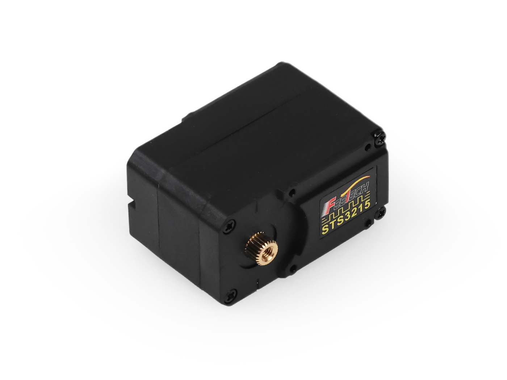
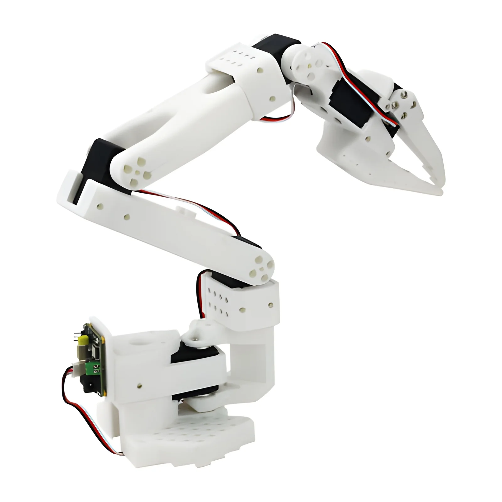
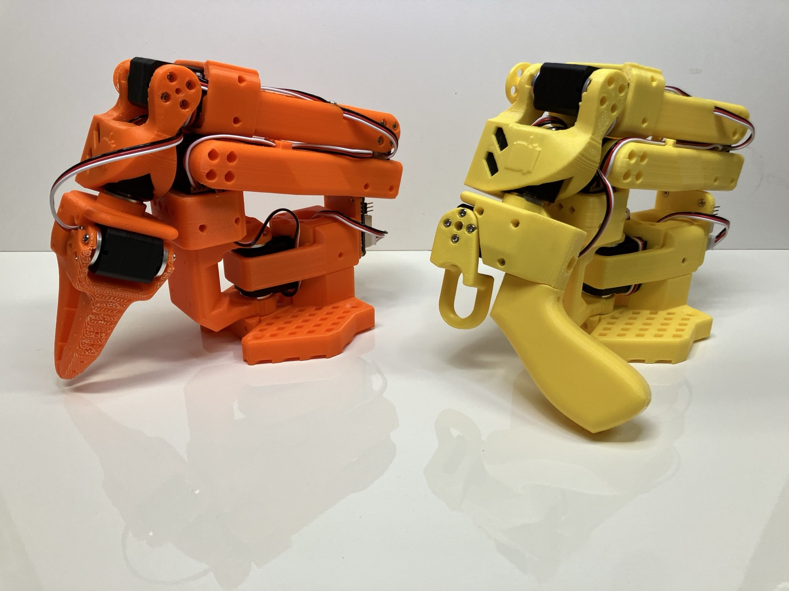
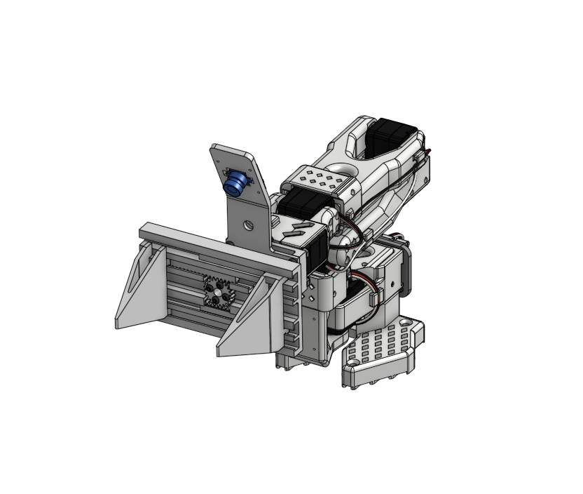
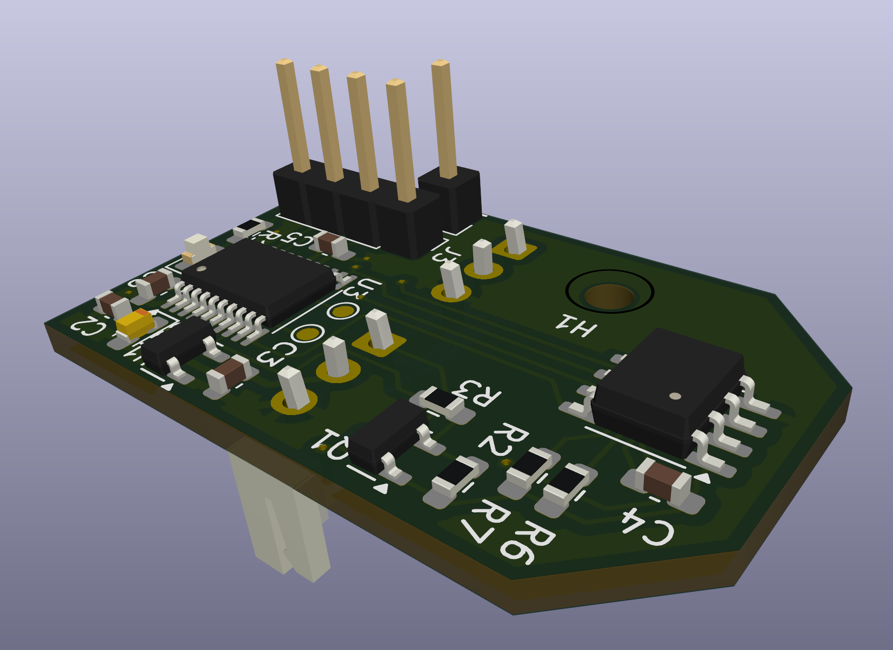
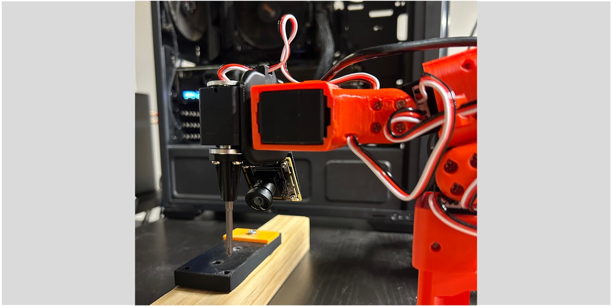

×6 · aktüatör
Feetech STS3215 Servo
Metal dişli, seri bus akıllı servo. Pozisyon ve tork geri beslemesi verir; tek kabloyla zincirleme bağlanır.
Metal dişliSeri busGeri besleme
Hashtag Robotics, açık robotik ekosistemini temel alan robot platformlarını mühendislik kalitesinde üretir ve kullanıma sunar. İlk platformumuz SO-101: 5 eksenli, tutuculu, LeRobot uyumlu masaüstü robot kol. Leader + follower birlikte, kurulu ve test edilmiş gelir; kutudan çıkar çıkmaz elektriğe tak ve kullanmaya başla. İlk parti için ön satış kaydı açıldı.
İlk parti sınırlı sayıda. Ön satış kaydı bağlayıcı değil ve bu aşamada ödeme alınmaz. Sıran açıldığında fiyat ve teslim tarihiyle ilk sana ulaşırız.

Endüstriyel robot kolların kinematiğini masaüstüne taşıyan, tamamen açık kaynaklı bir platform.


Hiçbir kapalı kutu yok. Kullandığımız bileşenleri, malzemeleri ve nereden geldiğini açıkça paylaşıyoruz. Kol sana kurulu ve test edilmiş gelir; içinde ne olduğunu baştan bilirsin.

Metal dişli, seri bus akıllı servo. Pozisyon ve tork geri beslemesi verir; tek kabloyla zincirleme bağlanır.
Taban, üst kol, ön kol, bilek ve tüm braketler 3D baskı. Onarması ve özelleştirmesi kolay; STL'ler açık.

Hareketli ve sabit çeneyle nesneleri kavrar. Çene uçları değiştirilebilir, farklı görevlere uyarlanır.

Tüm servoları tek hattan yöneten sürücü kartı. USB ile bilgisayara bağlanır, anında kontrol başlar.

Taban montaj plakası, vidalar, ara parçalar ve kablolama. Kutudan çıkar çıkmaz kurmaya hazır.

Hugging Face LeRobot ile çalışır. Teleop, veri toplama, taklit öğrenme ve otonom politikalar; hepsi açık.
Kısa formu doldur, ön satış sırana gir. Birkaç dakika sürer; kayıt bağlayıcı değil, ödeme alınmaz.
İlk parti hazır olduğunda fiyat ve teslim tarihiyle ilk biz sana ulaşırız.
Kol kurulu ve test edilmiş gelir. Elektriğe tak, ilk hareketini bugün yazdığın kodla yaptır; montaj yok.
Leader + follower birlikte, kurulu ve test edilmiş. Teleoperasyon ve taklit öğrenmeye kutudan çıkar çıkmaz hazır. İlk ürünümüz.
Ön satışa kaydolKompakt, çift bacaklı eğitim robotu. Yürüme, denge ve pekiştirmeli öğrenme denemeleri için. Bekleme listesi açık.
Bekleme listesiSO-101, Hugging Face LeRobot ekosistemiyle uyumlu, 5 eksenli ve tutuculu açık kaynak bir masaüstü robot koldur. Leader ve follower olmak üzere iki koldan oluşur; teleoperasyon, veri toplama ve taklit öğrenme (imitation learning) için tasarlanmıştır.
Kurulu ve test edilmiş gelir. Parça parça montaj yoktur; kutudan çıkarıp elektriğe takar ve kullanmaya başlarsınız.
Hashtag Robotics, SO-101'i Türkiye'de ön satışa sundu. Ön satış formunu doldurarak sıranızı ayırtabilirsiniz; üretim sıranız açıldığında fiyat ve teslim tarihiyle size ulaşırız.
Robotik ve yapay zeka eğitimi, üniversite ve araştırma laboratuvarları, prototipleme, teleoperasyon ve taklit öğrenme projeleri için kullanılır.
Hugging Face'in açık kaynak LeRobot kütüphanesiyle çalışır. Python ile programlanır; teleoperasyon, veri toplama ve politika eğitimini destekler.
Follower görevleri yapan koldur. Leader ise operatörün elle yönlendirdiği kontrolcü koldur; hareketleri follower kola birebir aktararak teleoperasyon ve veri toplamayı sağlar. SO-101 ön satışında ikisi birlikte gelir.
Şu an ön satış aşamasındayız ve ödeme alınmıyor. Ön satışa kaydolduğunuzda, üretim sıranız açıldığında güncel fiyat ve teslim tarihiyle ilk size biz ulaşırız.
SO-101 leader + follower, kurulu ve test edilmiş. İlk parti sınırlı sayıda. Ön satışa kaydol; sıran açıldığında fiyat ve teslim tarihiyle ilk sana ulaşalım. Kayıt bağlayıcı değil, ödeme yok.